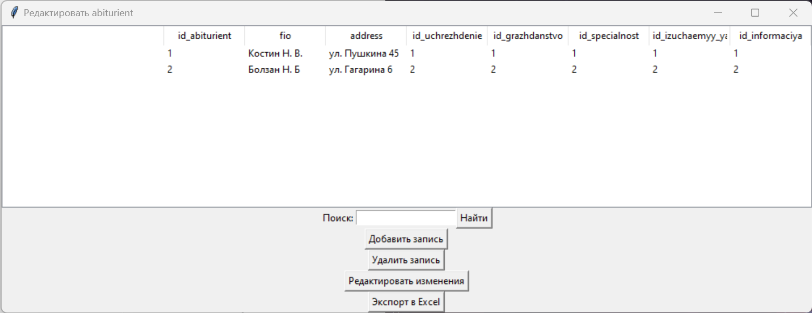
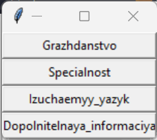

Руководство пользователя
Введение
Данное руководство предназначено для пользователя, который будет использовать приложение для управления данными об абитуриентах и связанных с ними сущностях (гражданство, специальности, изучаемые языки, дополнительная информация, учреждения образования).
Начало работы
- Установка библиотек: Убедитесь, что у вас установлены все необходимые библиотеки. Если нет, вы можете установить их с помощью команды:
pip install tkinter openpyxl pandas Pillow
- Запуск приложения: Запустите приложение, выполнив скрипт вашего приложения. Для этого выполните следующую команду в командной строке:
python ваш_файл.py
- Основное окно: После запуска приложения откроется главное окно с несколькими кнопками.

Основные функции
1. Абитуриент
- Нажмите кнопку "Абитуриент", чтобы просмотреть и редактировать информацию о абитуриентах.

- В открывшемся окне вы можете добавлять, редактировать и удалять записи.
- Для добавления нового абитуриента, нажмите кнопку "Добавить" и введите необходимую информацию.
- Для редактирования существующей записи, выберите абитуриента из списка и нажмите кнопку "Редактировать".
- Чтобы удалить абитуриента, выберите его из списка и нажмите кнопку "Удалить".
2. Абитуриентам
- Нажмите кнопку "Абитуриентам", чтобы выбрать категорию (гражданство, специальность, изучаемый язык, дополнительная информация, учреждение образования) и просмотреть, редактировать данные этой категории.

- В открывшемся окне вы можете просматривать и редактировать данные, а также выполнять поиск.
- Для добавления новой записи, нажмите кнопку "Добавить" и введите необходимую информацию.
- Для редактирования существующей записи, выберите запись из списка и нажмите кнопку "Редактировать".
- Чтобы удалить запись, выберите её из списка и нажмите кнопку "Удалить".
3. Учреждение образования
- Нажмите кнопку "Учреждение образования", чтобы просмотреть и редактировать информацию об учреждениях образования.

- В открывшемся окне вы можете добавлять, редактировать и удалять записи.
- Для добавления нового учреждения образования, нажмите кнопку "Добавить" и введите необходимую информацию.
- Для редактирования существующей записи, выберите учреждение из списка и нажмите кнопку "Редактировать".
- Чтобы удалить учреждение, выберите его из списка и нажмите кнопку "Удалить".
4. Экспорт в Excel
- В окне редактирования данных каждой категории доступна кнопка "Экспорт в Excel".
- Нажмите эту кнопку, чтобы сохранить данные в Excel-файл.
- Выберите место для сохранения файла и введите имя файла.
Завершение работы
- Выход: Для выхода из приложения закройте главное окно.
- Сохранение изменений: Все изменения в данных сохраняются автоматически при добавлении, редактировании или удалении записей.
Важная информация
- База данных: Убедитесь, что файл базы данных ("ab.db") находится в том же каталоге, что и ваш скрипт.
- Изображение: Убедитесь, что изображение ("ab.jpg") также находится в том же каталоге, что и ваш скрипт.
Вопросы и поддержка
Если у вас возникли вопросы или проблемы, обратитесь к разработчику для получения поддержки.